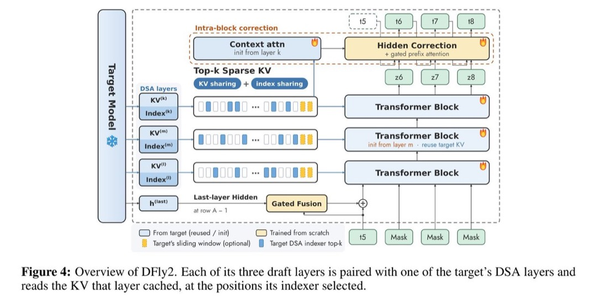

本期速览
02 Claude Code 团队发布代码装配流水线指南
04 Google Workspace MCP 服务器与 CLI 上线
05 腾讯混元开源投机解码器 DFly2
01｜GLM 5.4 API 价格低于官方 5.3 五成
来源（X） · @deeprelayai · 2026-11-27 20:31
中文译文
GLM 5.4 — 比 GLM 官方 5.3 API 价格低 50%。
每 1M tokens
输入 $0.70
缓存 $0.13
输出 $2.20
一个 OpenAI 兼容密钥。更改你的 base URL，保留你的代码。
原文
GLM 5.4 — 50% below GLM's official 5.3 API price.
Per 1M tokens
Input $0.70
Cached $0.13
Output $2.20
One OpenAI-compatible key. Change your base URL, keep your code.
02｜Claude Code 团队发布代码装配流水线指南
来源（X） · @huangyun_122 · 2026-11-27 21:23
1/ 怎么让团队小白不用慌： 放飞自我和畏首畏尾，都是极端，如何培养小白对 AI native 开发的信任？即便瞎点一通，让 AI 跑完所有代码，也要保证最后的合并，有人工检查
2/ 技术负责人才是整队瓶颈：如何让 AI 只动他们该动的地方，不该动的坚决不让动；如何防止 AI 审批放水，怎么确保真测试一定是动手测过的，而不像团队中老油条们那句“放心，测过了”；CI中哪些可以开 yolo 模式，哪些必须通知到人
Code is Cheap, What is Dear ??
引用内容
Addy Osmani @addyosmani
中文译文
原文
03｜生产环境执行模型生成代码需硬核沙箱隔离
来源（X） · @zcswl7961 · 2026-11-27 15:49
昨天约了一位聊了半小时，我只问了一个沙箱隔离细节：“当模型为了清洗一份结构怪异的压缩包，自己写了一段带正则回溯和多进程解压的脚本丢进沙箱执行，结果触发了 CPU 死锁或磁盘写满，怎么防止它把同宿主机上的其他租户任务一起拖垮？”
他支支吾吾半天，说当时直接用本地的子进程起了一个隔离目录跑的，没做过 cgroups 资源配额和网络出口阻断。
让概率模型动态生成代码并在生产环境执行，没有硬核沙箱隔离就是在系统里埋定时炸弹。
你们现在跑模型动态生成的代码，用的是哪套轻量级沙箱隔离方案？
04｜Google Workspace MCP 服务器与 CLI 上线
来源（X） · @Owenchen777 · 2026-11-27 22:33
Workspace 的 MCP 服务器和命令行工具正式上线，Gmail、Drive、Docs、Sheets、Calendar 等 8 款产品全打通。
最关键的是：不用企业版、不用绑信用卡，个人点一下就能用。
这意味着你的 AI 智能体可以直接读你的邮件、翻你的文档、看你的日历了。
Google 把自家全家桶的大门，一次性向所有 AI 打开。这步棋，比发十个模型都狠。
05｜腾讯混元开源投机解码器 DFly2
来源（X） · @dohewater · 2026-11-27 22:44
实测数字非常顶：
- 64K 长上下文下，DeepSeek-V4.1-Flash 吞吐最高提升 81%
- Hy4 flash 跑 Agent 任务最高提速 4.2x，同配方比 DSpark 快 ~30%，草稿接受率高 10.4%
之所以长文本和 Agent 场景优势这么大，核心是专门针对稀疏注意力做了「KV Share + Index Share」：
1. 草稿层直接复用主模型的稀疏 KV 和 Top-k 索引，零额外 KV 显存。
2. 不管上下文拉到多长，每个 draft token 最多只看 ~2K key，开销恒定。
3. 不参与 Prefill，天然适配 PD 分离，跨节点只需多传一个最后一层 hidden state。
现在 Agent 任务动辄几十 K 上下文，传统投机解码越到后面越拖后腿，DFly2 这套直接顺着稀疏注意力的毛捋，把推理加速和显存账一起算明白了。
